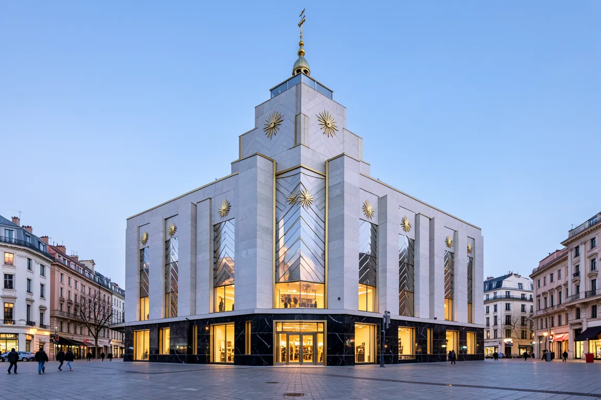

arkitektur · 1920s–1930s · også: Style Moderne, Streamline Moderne (sen fase), Zigzag Moderne
Trappede tårn, sikksakk- og chevronrelieff og rike materialer i en symmetrisk ramme. Stilen kom fra utstillingen i Paris i 1925 og gjorde skyskraperen og kinoen til bildene på maskinalderen.

Kjerneidé
Moderne teknologi fortjener luksus: maskinalderen skal se glamorøs, symmetrisk og dyr ut.
Designprinsipper
Trapp silhuetten tilbake i inntrekk på 1,5 til 4m etter hvert som tårnet stiger, og avslutt den med en spir, en krone eller en lanterne.
Understrek det vertikale: før pilastre eller finner ubrutt fra sokkelen til kronen, med brystninger trukket 100 til 300mm tilbake bak dem.
Komponer fronten på én midtakse og balanser begge sider; inngangen er det rikeste punktet.
Bruk geometrisk ornament: sikksakk, chevron, solstråler, kanneleringer og stilisert flora i lavt relieff på 25 til 75mm.
Bland rike og industrielle materialer: polert stein, krom, aluminium, bronse og glass i én fasade.
Gi lobbyen mest ornament i bygget: en høy hall med mønstret gulv, metalldører og opplyst tak.
Antimønstre
Glatte udekorerte flater uten relieff
Buede, piskesnertformede eller plantelignende linjer